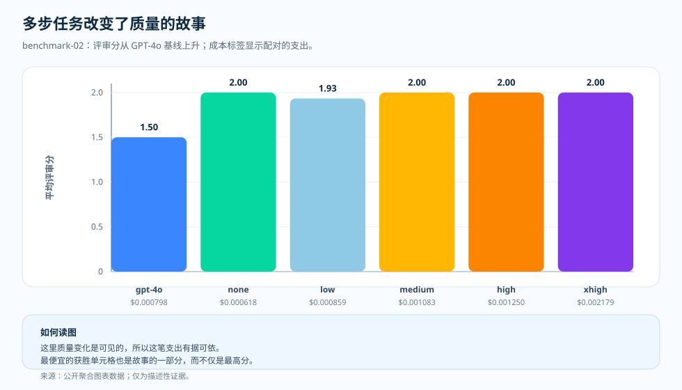

专题文章 · benchmark-02 多步工作
多步工作：当推理终于值得一试
读完短事实回答那组测量后，你大概会忍不住把推理强度归到"隐藏支出"那一类——不改变答案、只让账单变大的设置项。但团队也会跑那种"答案取决于能不能把一串约束同时记在脑子里"的任务。在这里，问题又重新打开了：更强的模型、更高的推理强度，改变的只是成本，还是连答案也一起改变？这个基准就把这种直觉拿去检验。
我们为什么要检验这个
短事实回答那组测量给了一个教训：当任务只要求回忆时，再调高强度多半只会增加 成本。可不是所有任务都只是回忆。现实里很多工作要求模型把一串小约束一直 "记在心里"——把几个条件组合起来，带着中途结果，然后才作答。在这种形态下， "让它多想一点"就不再像明摆着的浪费，反而开始像能回本的事。
由此就有了一个干净、值得验证的假设：如果任务真的需要把多个约束一起保持住， 那么更强的模型、更高的推理强度，也许带来的就不只是更大的账单，而是实打实的 质量。这个直觉是讲得通的——实验要检验的，是它能不能在一组测得的多步工作上、 而不是在抽象层面成立。
于是我们做了检验。benchmark-02 固定住这组多步工作，测试同一套模型与各档推理强度—— GPT-4o 基线，随后是 GPT-5.2 的 none、low、medium、high、xhigh——并在每个 配置上把平均评审分数挨着成本和延迟一起读。结果是混合的，值得如实说出来： GPT-5.2 把质量推到了 GPT-4o 基线之上，但在 GPT-5.2 内部，最高的 effort 设置 并不自动是赢家，而最便宜的最高分配置根本没有用任何推理 token。下面的单页 概览把这条信息一锤定音，随后各节再补上测得的细节。

问题
什么时候多花的推理带来的是质量提升，而不只是换来一张更大的账单？
证据
benchmark-02 的质量、成本、延迟与 token 形态四张图。
发现
GPT-5.2 的 low/none 区间相对 GPT-4o 基线带来了可见的质量提升，而且并不需要用上最高的 effort 设置。
结论
把多步工作路由到能跨过质量门槛的最低推理强度档；只有当配对的质量图真的动了，才往上调。

质量动了，解读也就变了
在 benchmark-02 里，基线 GPT-4o 配置的平均评审分数是 1.5。GPT-5.2 在 none、medium、high、xhigh 各档都达到了 2.0，low 档达到 1.93。这张图并没有说"总是该加大推理强度"，它说的是：这个工作负载具备足够的结构，让模型与推理强度的选择值得一试。
更要紧的，是去看最早"达标"的那几个配置的形态。GPT-5.2 none 平均每个请求 $0.000618，就已经摸到了 2.0。这让"试一试"本身变得有用，而不必把最高的推理强度档默认当成起点。
这张图该怎么读
横轴是"模型／推理强度"这个配置，纵轴是平均评审分数，每根柱子下方的标签是同一配置每个请求的平均成本。这种成对视图之所以重要，是因为只看质量柱容易诱使人过度选择：如果好几个配置都摸到了评分上限，那么更便宜、更快的那个反而更值得关注。
这不是频次直方图。每根柱子都是一个被汇总过的实验配置，在源表里有各自的样本数和标准差。
这个基准为什么不一样
短事实任务大多只要简短回答；多步工作则要求模型维持住一小条推理链。这就改变了"多想一会儿"能带来什么——推理预算不再只是隐藏的花销，而成了通往"少答错"的一条路径。
不过证据并不奖励"越多越好"。延迟随推理强度上升，xhigh effort 平均要 3.3s。一旦质量已经碰到天花板，下一个问题就变成：更慢的那个配置，是不是还在告诉我们什么新东西。
这意味着什么
推理之所以值回票价，是因为它改变了答案本身，而不是改变了答案的"气场"。多步工作正是"试一试"最该先落地的地方：任务有足够的内部结构让模型获益，评审者也能看出区别。
所以结论不是"到处都用更多推理"，而是"把多步工作路由到能跨过质量门槛的最低推理强度档"。
证据表
docs/blog/data/chart-data/cost-curves-effort/benchmark-02/quality.json，
请在证据仪表盘
（分发的图表数据）里
与成本图配对阅读。

| 证据行 | 指标 A | 指标 B | 它补充了什么 |
|---|---|---|---|
| GPT-4o baseline | 评审分 1.50 | $0.000798/request | 一个清晰的、要去超越的基线。 |
| GPT-5.2 none | 评审分数 2.00 | $0.000618/request | 这一公开测量里最便宜的满分配置。 |
| GPT-5.2 low | 评审分数 1.93 | $0.000859/request | 仍高于基线，但在这里并非干净利落的赢家。 |
| GPT-5.2 xhigh | 评审分数 2.00 | $0.002179/request | 同样满分，却伴随更大的账单和更长的延迟。 |
来源与证据边界
上面所有数字都能追溯到本仓库的公开产物，所有成本主张都按带日期的定价快照 算出。"停在能跨过质量门槛的最低推理强度"这一路由习惯，是本文自己的运维推断。 下面两个 Tier 标明了：有文档记载的输入到哪里为止，推断又从哪里开始。
- [1] Tier 1 — 方法论契约：本仓库，
docs/05-methodology.md（v1.0）。每个组合 N = 20 个人工编写样本、R = 3 次重复、仅取公开聚合结果。图表解读正文都立足于这组冻结前提；误差棒是标准差而非置信区间，在 N = 20 下不主张 p 值。 - [2] Tier 1 — PAYG 定价快照：每个请求的成本按本仓库的
pricing/azure-openai-payg-2026-05.yaml算出。来源：Azure OpenAI 定价页（2026-05-19 访问）· 存档。标价一动，成本数字也随之变化。 - [3] Tier 2 — benchmark-02 这组多步工作的测量：本仓库，
benchmarks/02-multi-step-reasoning/analysis.json。它是按推理强度划分的质量值——GPT-4o 基线 1.5，GPT-5.2 的 none、medium、high、xhigh 达到的 2.0，GPT-5.2 low 的 1.93，以及那个不用任何推理 token、却以每个请求 $0.000618 成为最便宜满分配置的 GPT-5.2 none——和每个请求 $0.000618 到 $0.002179 对应成本值的来源。 - [4] Tier 2 — 渲染后的图表数据：本仓库，
docs/blog/data/chart-data/cost-curves-effort/benchmark-02/cost-per-request.json、quality.json、latency.json。与docs/blog/data/chart-data/token-composition/benchmark-02/tokens.json一起读，就能佐证：这组多步工作里的质量上行，伴随的是被正当化的账单，而不是单纯变高的账单。 - [5] 证据仪表盘：渲染后的 benchmark-02 质量与成本配对图，是审计同一批产物的可核查形态。
这组测量证明了什么、又没证明什么：它表明，在这组多步工作里，GPT-5.2 相对 GPT-4o 基线带来了可测量的质量上行。它并不证明更高的推理强度总能提高质量、或总能 正当化额外的账单——在这里，最便宜的满分配置根本没用推理 token——也不证明 同样的上行会出现在短事实回答、工具代理或综合类工作里。每个专题各有自己的测量。
这些证据允许我们说什么
在这组任务里，多步工作从 GPT-4o 基线的 1.5 升到了 GPT-5.2 的 2.0，展示出可测量的质量上行，而这个上行来自模型升级，而不是各档推理强度。它为本系列加上一个基准点："推理正是在答案真的改变时，才值回成本。"
实用准则
- 把同一组多步工作的质量图与成本图配对着读，不要只看质量柱。
- 选那个能跨过质量门槛的最低推理强度配置；更高的配置只在评分真的动了时才作为候选。
- 往更高的推理强度提之前，先看延迟：强度上去了，等待时间也会拉长。
- 工作负载形态一变，就重新测量：这组任务里的上行不会自动延续到别的专题。
实用准则：在多步工作里，先选那个能跨过质量门槛的最低模型／推理强度配置， 只有当这种工作负载形态下配对的质量图真的动了，才提高推理强度。正当化账单的是 质量的上行，而不是花费本身。
下一篇： 工具代理：质量碰到天花板之后，真正的变量就变成了延迟 — 在用工具的工作里，当额外推理撞上天花板时，图表最先显示的是什么？